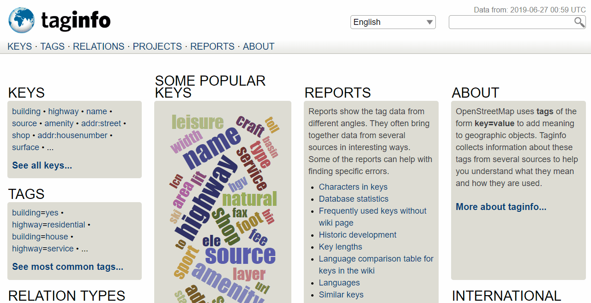

4.1 Designing The Data Model
Overview
When beginning a mapping project, a data model will need to be created in order to determine what features are mapped and the details collected for each of those features. A data model defines what features are surveyed or mapped and what attributes are collected for each feature. If a project will upload data to OpenStreetMap, the data model should be designed to match OSM tagging.
Example data models:
OSM doesn’t work with layers or attribute tables, but tags. Tags are used in OSM to categorize features, and to add information that is useful for understanding of the map, planning, routing, and querying. Each tag consists of a key, and a value. Each map feature should have one or more tags such as:
- building=residential
- highway=primary
- amenity=school
In addition, each of these features can have an unlimited number of related attributes added into OSM as tags. For example, a building might have the following tags:
- building=commercial
- building:material=brick
- roof:material=metal
- shop=tailor
Creating a data model should be done in collaboration with all stakeholders in order to ensure that all necessary information is collected - it is a lot more difficult to revisit a location for mapping to collect additional information. At the same time, when designing a data model you should consider how much time it will take for a surveyor to complete data collection - every feature type, attribute, or question will add additional time needed.
Presentations
Resources
- Check the OpenStreetMap wiki. Start at the Map features page, search, and discover!
- Research tag use and occurence on TagInfo
Data model workflow
Designing a data model based on OSM tagging is typically defined by the following questions and workflow:
- What is the focus of the data collection? Consider how the data will be used.
- What features do you want to collect? Identify the focus of the data collection.
- Where are you collecting data? Data models can differ based on their location.
- What has been done before? Draft data model by leveraging similar models.
- What tags exist for features?
- Verify tag status through OSM Wiki
- Verify tag usage through TagInfo
- Use approved tags where possible in data model
- Do all stakeholders agree on the data model? Review data model and incorporate feedback from project partners (adding, removing, or changing data model features can delay field data collection and decrease data quality!)
Tools for creating your data model
HOT recommends using TagInfo and the OSM Wiki to search for existing OSM features when developing your data model. The following steps will provide an introduction to how to use these tools.
Skills and Technology Needed
- Computer with
- Internet connection
- OpenStreetMap Account
- Recommended: computer mouse
How to Use the OSM Wiki

- Navigate to https://wiki.openstreetmap.org/wiki/Map_Features in a Google Chrome or Mozilla Firefox internet browser.
- This page provides documentation on common, existing OSM features categorized by type. These tables contain keys and values, along with comments and sometimes pictures to help define the tag. Scroll through the tables to explore the tags described.
- Search for a particular tag by using ‘Ctrl+F’ on your keyboard. As an example, search for the tag that should be used for hospitals. To do so, hit ‘Ctrl+F’ on you keyboard, type ‘hospital’ in the search bar, and hit enter. This will bring you to the appropriate tag for hospitals. Note: there might be more than one appropriate tag for a search item. Scroll through the results until you find the appropriate tag.
- Keys and values within the tables will also link out to individual wiki pages for those features. For example, by clicking on “hospital” under amenities, you will be redirected to https://wiki.openstreetmap.org/wiki/Tag:amenity%3Dhospital. This page provides in-depth detail about the tag as well as related tags and tips on how to map a particular feature.
- To practice, search for other key words relating to features you would want to map to discover keys and values related to that feature.
How to use TagInfo

- Navigate to https://taginfo.openstreetmap.org in a Google Chrome or Mozilla Firefox internet browser.
- In the upper left corner, use the search bar to find a tag. For this activity, search for “roof”.
- The next window will allow you to select from existing keys, values, and relations that contain “roof”.
- Selecting one of these options will bring you to an information page about that key, value, or relation. For this activity, find and click on “roof:material”.
- You will now see an information page about the tag “roof:material” including values that have been used with the key “roof:material”, combinations of other tags that have been used with the key, a map of the key’s global use distrubtion if there are enough use cases, and links to any existing related OSM Wiki pages.
- To practice, search for other key words relating to features you would want to map to discover keys and values related to that feature.
Creating your data model
The following activity will guide you through the process of creating a data model. While this process could be done by hand or in document software (such as Google Docs or Microsoft Word), spreadsheet software is the recommended method of documenting your data model.
Skills and Technology Needed
- Computer with
- Internet connection (recommended for accessing TagInfo and OSM Wiki)
- OpenStreetMap Account
- Recommended: computer mouse
- Spreadsheet software, such as LibreCalc, Google Sheets, or Excel (recommended for structuring your data model)
Create a list of all of the features that you want to collect. For example: buildings, water points, roads.
| Feature |
|---|
| Buildings |
| Water Points |
| Roads |
Go to OpenStreetMap wiki to search for the appropriate key for each feature, and value if there is only one value option.
| Feature | Key | Value |
|---|---|---|
| Buildings | building | |
| Water Points | amenity | water_point |
| Roads | highway |
For features with multiple values, such as buildings, use the OSM Wiki page for that key as well as TagInfo to find appropriate values. These values should only be what is reasonable for your data collection. While it would be ideal to collect every building type in a city, your project might only be able to collect all school and hospital buildings. Note: values in your data model should make sense for the context of your geography. For example: hut is an appropriate value for buildings in Liberia, but not likely in Germany. Additionally, you may need to interpret an existing value type to best match the appropriate value for your region.
| Feature | Key | Value |
|---|---|---|
| Buildings | building | residential, school, civic |
| Water Points | amenity | water_point |
| Roads | highway | primary, secondary, residential |
Once you have the base tags for your features, you can decide on what attributes you want or can collect for each feature.
| Feature | Key | Value |
|---|---|---|
| Buildings | building | residential, school, civic |
| building:material | ||
| building:levels | ||
| roof:material | ||
| Water Points | amenity | water_point |
| status | ||
| Roads | highway | primary, secondary, residential |
| name | ||
| condition | ||
| surface | ||
| width |
Next, values can also be determined for each attribute key. These options can be determined using the OSM Wiki and TagInfo, or in some cases can be defined by the mapper - such as for numeric answers or names.
| Feature | Key | Value |
|---|---|---|
| Buildings | building | residential, school, civic |
| building:material | cement_block, brick, wood, mud | |
| building:levels | numeric | |
| roof:material | thatch, metal, concrete, plastic, tile | |
| Water Points | amenity | water_point |
| drinking_water | yes, no | |
| Roads | highway | primary, secondary, residential |
| name | user defined | |
| condition | excellent, good, poor | |
| surface | gravel, paved, dirt | |
| width | numeric |
Once completed with your data model, this data model should be checked by your stakeholders for any gaps. Additionally, your project plan should allow flexibility so that this data model can be adjusted with field testing and consulting your mappers.
Collecting private data
Private data should never be uploaded to OSM. However, some projects do require personal information to be collected. When this is the case, the data model can include unique non-OSM tags for private data that needs to be collected. When cleaning data following data collection, this private data can be kept in a full dataset before being removed. Once private data is removed, the dataset can be uploaded to OSM.